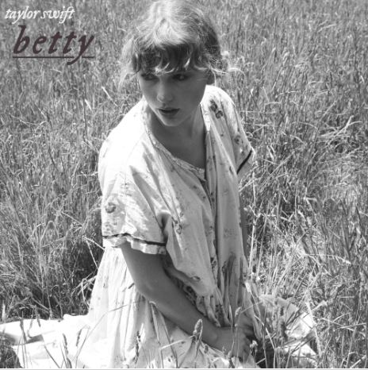

The Folklore Love Triangle

The story behind Betty
The song Betty from the perspective of James who thinks about what he did to Betty And
how he regrets what he did. He thinks about all the regrets he had about what he did with
Augusta. He then goes on to thinks about how he thinks cheating on her was the worst thing
he ever did and how he hopes Betty will take him back en tho she had to find about via rumars
that he cheated on her. Later in the song he fantasizes about getting back with Betty and how
he planned on going to her party and hoping that she would take him back. In the end of the song
he goes to party and and thinks about getting things back to normal.
Lyrics
Betty, I won't make assumptions
About why you switched your homeroom but
I think it's 'cause of me
Betty, one time I was riding on my skateboard
When I passed your house
It's like I couldn't breathe
You heard the rumors from Inez
You can't believe a word she says
Most times, but this time it was true
The worst thing that I ever did
Was what I did to you
But if I just showed up at your party
Would you have me?
Would you want me?
Would you tell me to go fuck myself?
Or lead me to the garden?
In the garden would you trust me
If I told you it was just a summer thing?
I'm only 17, I don't know anything
But I know I miss you
Betty, I know where it all went wrong
Your favorite song was playing
From the far side of the gym
I was nowhere to be found
I hate the crowds, you know that
Plus, I saw you dance with him
You heard the rumors from Inez
You can't believe a word she says
Most times, but this time it was true
The worst thing that I ever did
Was what I did to you
But if I just showed up at your party
Would you have me?
Would you want me?
Would you tell me to go fuck myself?
Or lead me to the garden?
In the garden would you trust me
If I told you it was just a summer thing?
I'm only seventeen, I don't know anything
But I know I miss you
I was walking home on broken cobblestones
Just thinking of you when she pulled up like
A figment of my worst intentions
She said "James, get in, let's drive"
Those days turned into nights
Slept next to her, but
I dreamt of you all summer long
Betty, I'm here on your doorstep
And I planned it out for weeks now
But it's finally sinkin' in
Betty, right now is the last time
I can dream about what happens when
You see my face again
The only thing I wanna do
Is make it up to you
So I showed up at your party
Yeah, I showed up at your party
Yeah, I showed up at your party
Will you have me?
Will you love me?
Will you kiss me on the porch
In front of all your stupid friends?
If you kiss me, will it be just like I dreamed it?
Will it patch your broken wings?
I'm only 17, I don't know anything
But I know I miss you
Standing in your cardigan
Kissin' in my car again
Stopped at a streetlight
You know I miss you